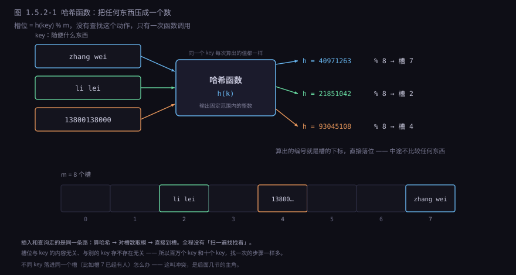
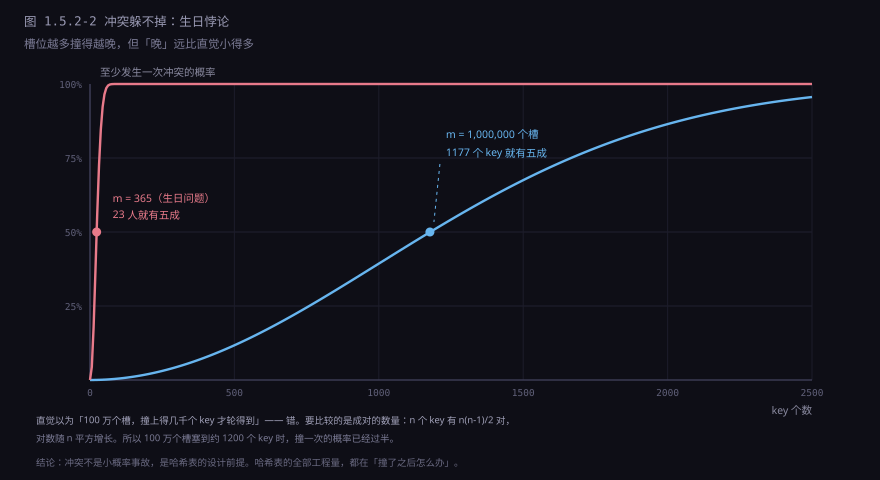
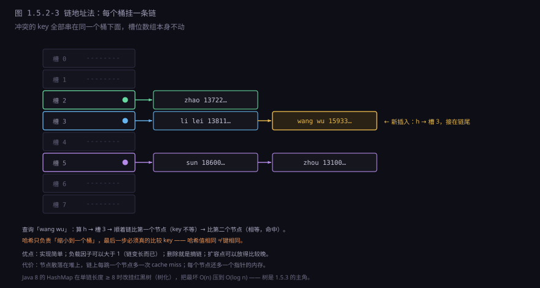
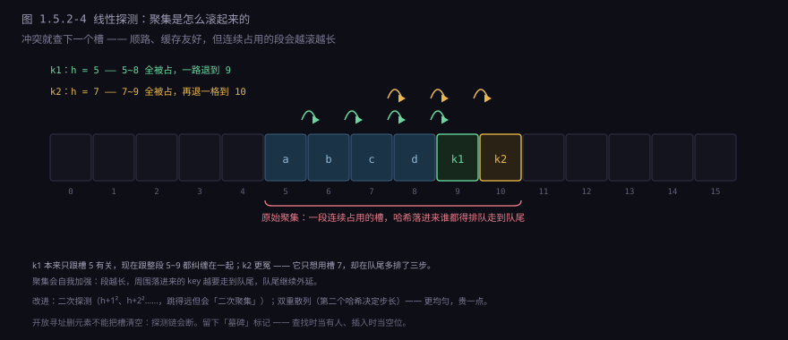
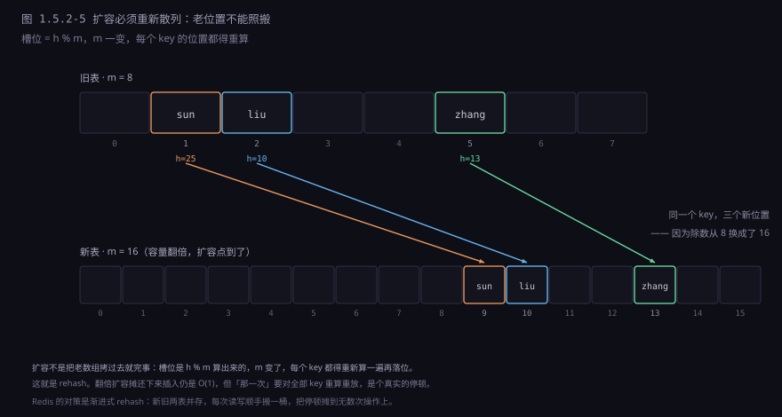
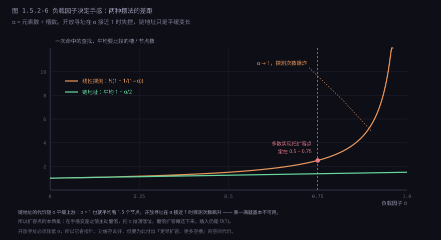

约 0.9 万字 · 6 张图 · 读完你能说清哈希函数在做什么、冲突为什么躲不掉、 两种冲突处理法各吃什么亏，以及扩容时那些位置为什么必须重算
先把问题摆清楚。有一个存了一百万条「姓名 → 电话」的表，要查「李雷」的电话。 上一节的四种结构各能做到什么：
| 结构 | 按名字找 | 为什么 |
|---|---|---|
| 数组 | O(n) | 不知道李雷在第几号，只能一个一个比 |
| 链表 | O(n) | 同上，而且每跳一步还要等一次取址 |
| 栈 / 队列 | O(n)，还得破坏结构 | 它们压根没打算让你在中间找东西 |
| 排好序的数组 | O(log n) | 二分查找，20 次比较就能定位——但每次插入都要挪 |
最后一行是唯一像样的答案：把数据按名字排好序，二分。 100 万条记录只需要 20 次比较，微秒级。听起来够用了， 但代价在「插」和「删」上：往排好序的数组中间插一条，后面几十万条都要往后挪， 那是 1.5.1 里说的 O(n) 搬家。一个通讯录如果只读不写，二分完全够； 可真实的表一直在增删，排序维护不住。
还有一个更根本的问题：二分要求「能比大小」。 名字可以按字典序比，可要是键是身份证号、URL、图片的 MD5、 或者一个包含十几个字段的对象呢？「比大小」这件事本身就得先定义， 定义出来了也不一定有意义——「https://a.com/x」和「https://b.com/y」 谁大谁小，除了排序本身，没有任何用处。
所以需要的不是「更好的查找算法」，而是一个完全不同的思路： 能不能不比较，直接算出位置？
能。只要你愿意接受一件事：位置由内容决定。 名字是「李雷」，那「李雷」这三个字本身就带着一个编号， 只要你有一个函数能从名字算出这个编号，取的时候再算一遍就行。 这个函数就是哈希函数，算出来的编号叫哈希值。
注意这个思路跟前面所有结构的根本区别：数组、链表、树，位置都是外部安排的 ——你决定放第几个，或者按大小排到某处。 哈希表里位置是内容自己长出来的。 正因如此，取的时候不需要任何线索，把内容再喂进函数一次就够。
哈希函数的定义一句话：输入任意长度的东西，输出一个固定范围内的整数。
h("李雷") = 40971263
h("韩梅梅") = 21851042
h(13800138000) = 93045108
h(0x7ffd4a2b) = 77102944输入是字符串、整数、指针、结构体都行，输出统一是一个 32 位或 64 位的整数。 这个整数还不能直接用——表只有 m 个槽，得把它折进范围里。最常用的折法是取模：
槽位 = h(key) % m // m 是槽的个数比如 m = 8，h("李雷") = 40971263，40971263 % 8 = 7，那「李雷」就放 7 号槽。 下次查「李雷」，重算一遍还是 7，直接去 7 号槽拿。

这里有三个必须说清的点。
第一，同一个 key 每次算出的值必须一样。 这是哈希表能用的前提。如果 h("李雷") 今天返回 7、明天返回 3， 存进去以后就再也找不到了。所以哈希函数必须是纯函数：不看全局状态、不看时间、不看随机数。 Python 里有个著名的例外——字符串哈希带了一个进程级随机种子， 但那个种子在进程启动时就固定下来了，进程内每次算都一样， 只是换个进程会变。这不妨碍它当哈希表用，只意味着「哈希值不能存到磁盘上跨进程使用」。
第二，输出范围要有限。 真正的哈希表不会拿 64 位哈希值直接当地址——那是 16 EB 的空间。 折进 m 个槽是必须的，这一步也埋下了冲突的根： 有限的槽装无限的 key，撞车是数学必然，不是实现缺陷。
第三，取模这一步有讲究。
% m 是一次除法，除法在 CPU 上要十几到几十个周期，比加减慢得多。
所以容量取 2 的幂时，实现会改用位与：
m = 16 时
h % 16 → 一次 div，约 20 到 40 周期
h & (16 - 1) → 一次 and，1 周期
前提：m 必须是 2 的幂，否则 & 得到的不是取模
Java 的 HashMap、Go 的 map、Rust 的 hashbrown 都走这条路。
取模换位与省下的这点时间，在每次插入每次查询都要算一遍的情况下，很值。
代价是「只取低几位」会放大哈希函数的质量问题： 如果 h 的低 4 位经常重复（比如都是 0），那么 m = 16 时所有 key 都会挤进同一个槽。 Java 的对策是在取位与之前先做一次扰动，把高位的信息混进低位：
static int hash(Object key) {
int h = key.hashCode();
return h ^ (h >>> 16); // 高 16 位异或到低 16 位
}
// 之后再用 (n - 1) & hash 定位，n 是容量这一行的意思是：如果哈希值的高位有区分度、低位没有（很常见，因为整数 key 往往高位变化、低位固定）， 那么把高位折下来，让低位也带上信息。一行代码，解决了一整类「哈希函数不坏但被截断搞坏」的问题。
既然位置是算出来的，那函数的脾气就决定了整张表的脾气。好的哈希函数要满足三条。
一是快。
每次插入、每次查询都要算一遍，函数慢，表就慢。
一个要做 200 次乘法的「密码学级」哈希，用在表上就是自杀：
SHA-256 算一次要几百纳秒，比直接线性扫十个小元素还慢。
哈希表要的是廉价混合，不是密码学强度——这两件事经常被搞混。
二是均匀。 输出要尽量摊满整个范围，不要偏爱某些值。 均匀性差的典型症状是「一堆 key 挤在少数几个槽」， 于是查找退化成遍历那一条长链。
三是雪崩。
输入差一个 bit，输出要面目全非。
这条标准专门对付「相似的 key」：如果 h 只取决于前几个字节，
那么 user_00001 到 user_99999 会算出大量相同的值；
如果 h 是「各字节求和」，那么 ab 和 ba 完全一样，
而且范围被压在很小的区间里。
看两个真实在用的字符串哈希，都很短，都能用：
// djb2（Daniel Bernstein，1991）
unsigned long h = 5381;
while (*s) h = h * 33 + *s++; // 33 = 32 + 1，编译器会做成移位加法
// FNV-1a（1991）
unsigned long h = 2166136261u;
while (*s) { h ^= *s++; h *= 16777619u; }两个都是「乘一个大常数 + 加（或异或）下一个字节」，靠自然溢出把高位丢掉。 为什么这样就够了？因为乘一个大奇数会把输入的每一位往高位推， 溢出的部分丢掉，剩下的位就被之前的输入反复混过。 一次乘法的扩散效果有限，但循环几十次以后，一个字节的差别已经传到整个字长的各处了。
整数 key 更省事。有一种叫乘法散列的做法，是 Knuth 提的：
// 64 位无符号数，取高位而不是低位
uint64_t h = key * 11400714819323198485ull; // 2^64 / φ
槽位 = h >> (64 - log2(m));
那个常数是黄金比例的倒数乘以 2 的 64 次方。它的性质是「把连续的整数打散得最开」，
所以 1, 2, 3, 4… 这种连续 key 也不会挤在一起，而是均匀散到整个区间。
取高位而不是低位，是因为乘法之后低位的变化最小，高位才带信息。
现在说那个绕不过去的问题。m 个槽，要放 n 个 key，只要 n 比 m 大， 就必然有两个 key 落进同一个槽——这叫冲突（collision）。 但真正反直觉的是：n 远小于 m 的时候，冲突也几乎一定会发生。
先看一个中学就讲过的现象。一个班 50 个人，有两个人同一天生日的概率是多少？ 很多人算成 50/365 ≈ 14%。正确答案是 97%。原因是要比较的不是「50 个人各自和某一个特定的人同生日」， 而是所有可能的两两组合：50 个人有 1225 对，每一对撞上的概率是 1/365， 1225 对里一对都没撞上的概率是 (364/365)^1225 ≈ 3%。
n 个 key 两两组合的对数：n(n-1)/2
一对都没撞上的概率 ≈ exp(-n(n-1) / (2m))
撞上的概率 ≈ 1 - exp(-n(n-1) / (2m))
令概率 = 50%，解出 n ≈ 1.18 × √m最后这行是本节最该记住的一个数：撞车概率过半的点，在 √m 附近。 把它代进实际规模：
| 槽数 m | 50% 概率发生冲突时 | 相当于装了 |
|---|---|---|
| 365（一年天数） | 23 个 key | 6% 满 |
| 1 万 | 118 个 key | 1.2% 满 |
| 100 万 | 1177 个 key | 0.12% 满 |
| 10 亿 | 3.7 万个 key | 0.0037% 满 |

这张图的实用含义是：冲突处理不是异常分支，是主流程。 一个哈希表的性能，主要不是由哈希函数决定的，而是由「撞了以后怎么办」决定的。 后面三节全在讲这件事。
在讲两种冲突处理法之前，先把一次插入的骨架立起来。它在两种实现里是一样的：
insert(key, value):
i = h(key) % m // 1. 算槽位
while 槽 i 被占用: // 2. 槽被占了呢？
if 槽 i 的 key 等于 key:
覆盖 value; return // 3a. 是同一个 key，更新
i = 下一个候选槽位 // 3b. 是别人的 key，换一个位置继续找
把 (key, value) 写进槽 i // 4. 找到空位，落座查询是同一段代码，只是最后一步换成「读出来」而不是「写进去」。 这里有两个容易忽略的点。
第一，最后一定要比较 key 本身。 哈希值只是「筛出候选」，不能证明相等。两个不同的 key 完全可能算出同一个槽位， 甚至（理论上）算出完全相同的哈希值。所以 哈希值相同只是「可能相等」，key 相等才是「确实相等」。 这就是为什么自定义类型做键时，必须同时正确实现「哈希」和「相等」两个操作， 而且两者要一致：相等 ⇒ 哈希值相等（反过来不要求）。
Java 里这两个方法是 hashCode() 和 equals()，
Python 里是 __hash__ 和 __eq__，C++ 里是
std::hash 特化和 operator==。只写一个是最常见的 bug 来源：
只写 equals 不写 hashCode，两个「相等」的对象会落到不同槽，查不到；
只写 hashCode 不写 equals，两个哈希相同但内容不同的对象会被当成一个，覆盖掉。
第二，第 3b 步「换一个候选槽位」就是两种流派的分水岭。 换到哪儿去？这个问题有两种主流答案，它们对应两种完全不同的数据结构。
第一种答案最直白：槽里不放数据，放一个链表的头指针。 撞了就往那条链上再挂一个节点。
struct entry {
char *key;
void *value;
struct entry *next; // 同一个槽里的下一个
};
struct entry *table[1024]; // 每个槽是一个链表头插入时算出槽位，走到那个槽，顺着链比较每个节点的 key，都没有就新建一个节点挂在链尾（或链头）。 查询同理。这一招叫链地址法（separate chaining），也叫拉链法。

它的好处很实在：
实现简单。不需要考虑「表满了怎么办」，链可以无限长； 删除就是摘链，一步到位，不用留标记。
负载因子可以大于 1。1000 个槽放 3000 个 key 不会崩， 只是平均每条链 3 个节点。开放寻址做不到这一点——它的元素必须都待在槽里， 槽满了就真装不下了。
扩容可以拖。因为槽满了也能继续挂链，所以不用急着扩容， 可以等到链真的长了再动。
代价也有两条，而且在现代 CPU 上都不轻：
一是每跳一个节点就是一次 cache miss。
链表节点是插入时逐个 malloc 出来的，散落在堆的各处。
1.5.1 讲过的「地址依赖链」在这里完整复现：
要读下一个节点，得先拿到当前节点里的指针，那就必须等这次内存访问完成。
链长 8 的桶，最坏要串行等 8 次，每次几十纳秒。
二是每个节点都带指针开销。
一个 key-value 对多 8 字节指针；Java 里更狠，节点是个对象，
16 字节对象头起跳，一个 HashMap.Node 实打实 32 字节
（哈希值 4、key 引用 4、value 引用 4、next 引用 4，加对象头对齐）。
100 万条记录，光节点就是 32 MB。
Java 8 之后给这个结构打了个补丁：单条链长度达到 8 时，把链转成红黑树。 链长 8 在随机哈希下概率极低（约千万分之六），所以平时不付出树的代价； 一旦有人恶意构造大量同槽 key，树能把最坏情况的 O(n) 压到 O(log n)。 这就是「树化」，而树是下一节的主角。
第二种答案更省：不加链表，冲突了就按某个规则找下一个空槽，把数据放进去。 所有元素都待在槽位数组里，一个指针都不用。
最简单也最常用的是线性探测：槽 i 被占了就看 i+1，还占就看 i+2，直到找到空的。 查询时走同一条路：算出 i，如果那里的 key 不是要找的，就继续看 i+1、i+2…… 直到找到，或者遇到一个空槽（空槽意味着这条路上后面不可能有它）。
i = h(key) % m;
while (table[i].used) { // 一直走到空槽
if (equal(table[i].key, key)) return table[i].value;
i = (i + 1) % m; // 线性探测：下一个
}
return NOT_FOUND; // 遇到空槽 = 这条路走完了
这条路的优点正好补上链地址法的短板：
没有指针，没有额外分配。所有数据在一个数组里， 探测时读的是相邻的几个槽，通常在同一个缓存行里，一次 miss 就够。 实测在中等负载下，开放寻址比链地址快一倍以上，原因就在这里。
内存紧凑。100 万条记录，链地址要额外 32 MB 的节点开销， 开放寻址只有那个数组本身。
但它的短板也同样明显，而且更致命：
第一，负载因子不能高。元素不能超过槽数，否则真的没地方放。 实际实现会把它压在 0.5～0.75 之间，超过就扩容—— 也就是说，一个 100 万条记录的表，得准备 150 万到 200 万个槽。
第二，探测次数随负载因子急剧上升。这一条下面单独说。
第三，删除很麻烦。把槽清空会让探测链断掉，后面那些「绕过来的」key 就找不到了。 解决办法是留一个「墓碑」标记，这也是单独一节。
探测规则不一定是「下一个」。常见的还有两种：
| 探测方式 | 第 k 步看哪 | 优点 | 问题 |
|---|---|---|---|
| 线性探测 | (i + k) % m |
连续内存，缓存最友好，实现最简单 | 原始聚集严重（见下一节） |
| 二次探测 | (i + k²) % m |
不会紧挨着排成一片，聚集弱一些 | 跳得远，每次都是一次新 miss；且同一起点仍走同一序列 |
| 双重散列 | (i + k·h₂) % m |
分布最均匀，接近理想哈希 | 每次探测都要多算一次哈希（h₂ 是第二个哈希），且要求 m 与步长互质 |
Python 的 dict 用的是「扰动探测」：先用 i = h & mask 定位，
冲突了就用哈希值的高 5 位做一次扰动，再算下一个位置。
这样既保持了线性扫描的局部性（下一个位置就在附近），又打散了聚集。
Redis 用的也是类似的做法。
线性探测最要命的问题叫聚集（clustering）： 一段连续被占用的槽会自我加强。
假设 5 到 8 号槽已经被占。现在来了一个 key，哈希到 5 号—— 它得一路走到 9 号。再来一个哈希到 6 号的，也得走到 9 号（如果 9 号已占，就走到 10 号）。 于是这段「连续占用」从 5~8 长成了 5~10，接着又会吞掉更多落进来的 key。
更要命的是：只要 key 的哈希值落在段里的任意一个位置，它就要走到段尾。 一个长度 L 的段，对「落进这一段」的所有 key 都额外征收 L 步的成本。 而段越长，落进来的概率越大——正反馈。
数学上，线性探测在负载因子 α 下的平均探测次数是：
命中查找： ≈ ½ (1 + 1/(1-α))
不命中查找：≈ ½ (1 + 1/(1-α)²)
α = 0.5 → 命中 1.5 次，不命中 2.5 次
α = 0.75 → 命中 2.5 次，不命中 8.5 次
α = 0.9 → 命中 5.5 次，不命中 50 次注意最后一行。负载因子从 0.75 到 0.9 只多了 0.15， 不命中查找的平均探测次数从 8.5 涨到 50——五倍多。 这就是为什么开放寻址的实现几乎都把扩容阈值压在 0.75 以下： 不是怕表满，是怕手感在接近满的时候断崖式变差。
第二个坑是删除。开放寻址里，一个不存在的 key 的「查找结束条件」是「遇到空槽」。 那么如果把某个槽真的清空，会怎样？
槽: 5 6 7 8
[a] [b] [ ] [c]
↑
b 和 c 都想放 5 号，b 占了 6 号，c 被挤到 8 号
删掉 b 之后：
槽: 5 6 7 8
[a] [ ] [ ] [c]
↑
查 c：算到 5 → 6 是空的 → 「这条路断了，c 不存在」
但 c 明明在 8 号。查找失败。解决办法是墓碑（tombstone）：删除时不置空，而是打一个「这里死过人」的标记。 查找时把墓碑当作「已占用」继续往下走，插入时把墓碑当作「空位」可以复用。 代价是墓碑会一直占着位置，直到下一次扩容才被真正清掉—— 所以一个频繁增删的表，即使元素不多，探测也会越来越慢。
表总会满，或者负载因子总会顶到阈值。这时候要扩容。 直觉上，扩容就是把老数组拷到新数组里——但哈希表不行。
因为位置是 h % m 算出来的，m 变了，每个 key 的位置都变了。
老表里在 5 号槽的 key，新表里可能在 13 号。所以扩容必须逐个 key
重新算哈希、重新取模、重新落位。这一步叫 rehash。

代价是一次的：搬 100 万条记录，要对每个 key 重算哈希再落位， 在现代机器上大约几十到几百毫秒。这个停顿在服务端是能被感知的—— 一个请求正好撞上扩容，就会突然慢几十倍。
但摊还下来还是便宜。理由与 1.5.1 里动态数组的扩容完全同构： 容量按倍数增长（通常翻倍），搬的总次数是 1 + 2 + 4 + … + n，不到 2n， 摊到每次插入就是常数。 「摊还 O(1)」这个词在这里第二次出现，两次的算术是同一套。
那什么时候扩？看负载因子 α = 元素数 ÷ 槽数。 不同实现选不同的点，本质是在「空间」和「速度」之间选：
| 实现 | 冲突处理 | 扩容阈值 | 扩容倍数 |
|---|---|---|---|
Java HashMap | 链 + 树化 | 0.75 | 2 倍 |
C++ unordered_map | 链 | 1.0（可调） | 约 2 倍（质数序列） |
Python dict | 开放寻址 | 2/3 | 约 4 倍（小表翻倍） |
Go map | 桶 + 溢出桶 | 6.5 / 桶 | 2 倍 |
Redis dict | 链 | 1.0（无持久化时）/ 5.0 | 2 倍 |

Java 的 0.75 是个折中：再高，链变长的速度快于空间节省的收益； 再低，浪费的内存太多（100 万条记录要预留 200 万个槽）。 这个数字是实测出来的经验值，不是推导出来的。
Redis 的 5.0 则是有意的偷懒：它在做后台持久化（fork 出子进程写盘）时， 尽量不扩容，因为扩容会触发写时复制，把内存翻倍。 用性能换内存，这个取舍只有它自己知道。
最后提一个工程上很漂亮的手法：渐进式 rehash。 既然一次性搬 100 万个 key 会卡住，那就别一次搬完。 Redis 保留新旧两张表，每次读写操作顺手搬一个桶；查找时两张表都查一遍。 等到搬完，旧表释放。
这样每次操作只多一点点工作，把「几十毫秒的停顿」摊成了「几百万次的一点点」。
代价是这段时间内内存占用翻倍，且每次操作都要判断「现在是不是在 rehash」。
Go 的 map 扩容也是类似的思路（evacuate，逐步搬迁）。
哈希表用起来简单，坑却很集中。下面这几条都是真会踩到的。
一、最坏情况是 O(n)，而且是可被利用的。 如果所有 key 都落进同一个槽，哈希表就退化成一个链表。 攻击者可以故意构造这样的 key——2011 年就有研究报告指出， 多数语言（Java、PHP、Ruby、Python、ASP.NET）的哈希表都能被这种方式打瘫： 发一个包含几万个精心构造参数的 POST 请求，服务端解析参数时要建哈希表， 每次插入都退化成遍历一条长链，一个请求就能吃掉几分钟 CPU。
现在的对策是给哈希加随机种子：进程启动时随机选一个数，
混进哈希计算。这样攻击者离线构造的 key 到了线上就打不准了。
Python 从 3.3 起默认开启（PYTHONHASHSEED），
Rust、Ruby、Perl 用的是 SipHash——一种专门为「抗哈希洪水」设计的、
带密钥的哈希函数。它的速度比 djb2 慢，但足以让构造碰撞变得不可行。
二、键必须是不可变的。 哈希值在插入时算一次，位置就定死了。如果之后修改了键的内容， 哈希值变了，但记录还在老位置——下次查就查不到了，而且它会永远占着那个槽， 变成一块垃圾。
// 错误：用可变对象做键
Map<List<Integer>, String> m = new HashMap<>();
List<Integer> k = new ArrayList<>(List.of(1, 2));
m.put(k, "值");
k.add(3); // 键被改了
m.get(k); // null —— 哈希值变了，去的是另一个槽
m.get(List.of(1, 2)); // 也拿不到 —— 那个槽里躺着的 key 已经不是原来那个了
所以 Java 里做键的通常是 String、Integer 这些不可变类型；
自定义类做键，必须保证参与哈希的字段不可变。
（Java 的 String 还顺手把哈希值缓存在对象里，
第一次算完就不再重算——因为字符串哈希要遍历全部字符，
而 HashMap 每次操作都要算一遍。）
三、遍历顺序是没有意义的。 哈希表的顺序由槽位决定，而槽位由哈希值和容量决定。 插入一个新元素可能触发扩容，扩容后所有元素位置全变—— 所以「上次遍历是这个顺序，这次应该也差不多」这个假设是错的。
需要顺序的场景，要么用有序结构（树、跳表），要么额外维护一个链表记住插入顺序
（Java 的 LinkedHashMap 就是这么做的）。
Python 3.7 起 dict 保证插入顺序，但那是 dict 的额外承诺，
靠的是一层紧凑的 entries 数组——不是哈希表的通用性质。
四、浮点数做键要小心。
0.1 + 0.2 不等于 0.3，它们的哈希值自然也不同；
-0.0 == 0.0 但哈希值在某些语言里不一样；
NaN != NaN，所以拿 NaN 做键存进去就再也取不出来。
这些不是哈希表的问题，是浮点数的问题，但哈希表会把它放大成「数据凭空消失」。
五、内存开销比想的大。
一条「字符串 → 整数」的记录，业务数据可能只有 20 字节，
但在 Java 的 HashMap 里要占 32（Node）+ 40（String 对象）+ 8（数组槽位）
≈ 80 字节，四倍。100 万条记录就是 80 MB。
这也是为什么「缓存几百万条数据」经常比预期更早 OOM。
哈希表的原理就这么点，但各家实现的差异不小，而且差异都集中在「怎么处理冲突」和「怎么扩容」上。
Java 的 HashMap：链 + 树化。
数组里存链表头（或树根），单链长度达到 8 且总容量至少 64 时转成红黑树。
扩容时有个巧妙的优化：容量翻倍后，每个 key 的新位置只有两种可能——
原地不动，或者移动到「原位置 + 旧容量」。
因为 h & (2m-1) 比 h & (m-1) 多用了最高一位，
这一位是 0 就不动，是 1 就往后跳 m。所以扩容时不用重算哈希，
只要看那一位，把链拆成两条即可。
Python 的 dict：开放寻址 + 紧凑布局。
3.6 之后它分两层：一层是稀疏的索引数组（存的是「第几条记录」的下标），
一层是紧凑的 entries 数组（按插入顺序连续存放 key-value）。
查找时先查索引，再跳进 entries。好处有三个：遍历时是连续内存（快）、
天然保持插入顺序、内存比纯稀疏表省很多（索引只存 4 字节下标，不存完整的 key）。
Go 的 map：桶数组 + 溢出桶。 一个桶固定装 8 个 key-value，外加 8 个哈希值的高字节（用来快速筛掉不可能相等的项）， 装不下就挂一个溢出桶。查找时先算到桶，再在桶里线性扫 8 个—— 因为 8 个 key 挤在同一个缓存行里，这个线性扫比「再算一次哈希」还快。 扩容阈值是「平均每个桶 6.5 个」，比 8 低，就是给溢出留余量。
Redis 的 dict：链 + 渐进式 rehash。 它要服务几十万个 key，且不能接受停顿，所以扩容是分批做的。 另外它同时维护两张表，查找时两边都查——这段代码因此多了一个分支， 但换来了「永不卡顿」。
| 实现 | 冲突处理 | 一个亮点 | 一个代价 |
|---|---|---|---|
| Java HashMap | 链，长链转红黑树 | 扩容时靠一位判断，不用重算哈希 | 每条约 80 字节，内存重 |
| Python dict | 开放寻址 + 扰动 | 紧凑布局，遍历快且保插入顺序 | 负载因子只能到 2/3，空槽多 |
| Go map | 8 槽桶 + 溢出桶 | 桶内线性扫，缓存命中率高 | 实现复杂，且不保证遍历顺序（每次随机） |
| Redis dict | 链 + 渐进 rehash | 扩容不停顿 | rehash 期间内存翻倍，代码分支多 |
看这张表会发现一件事：没有一个实现是「教科书哈希表」。 每个都在某处加了补丁，补的都是同一类问题——冲突处理太慢、扩容太贵、内存太多。 这也说明哈希表的核心难点从来不是「怎么算哈希」， 而是「撞了以后怎么收场」。
哈希表把「按内容找」做到了 O(1)，代价是它把顺序彻底打乱了。 而顺序本身是一种信息，很多查询要的正是这个信息。
范围查询。「取 2026 年 1 月到 3 月的所有订单」—— 哈希表只能一条条判断「这条在不在区间里」，等于全表扫描。 因为它对「大小关系」一无所知：相邻的两个 key 在表里可能隔着十万八千里。
最接近的那个。「找小于 100 的最大值」，哈希表做不到。 它只会回答「100 在不在」，不会回答「谁挨着 100」。
排序遍历。要把所有 key 按顺序列出来，哈希表得先全部取出再排序， O(n log n)。而一棵平衡树只要中序遍历，O(n)。
前缀匹配。「所有以 138 开头的号码」——
哈希把前缀信息彻底搅碎了，同一前缀的 key 散落在各处。
这类需求要靠 trie（字典树）或者有序索引。
所以真实的系统里，哈希表和树是搭档而不是替代关系。
数据库的主键索引用 B+ 树，因为它要支持范围扫描和排序；
但内存里的连接缓冲、去重集合、缓存映射，用的都是哈希表。
一个 MySQL 查询可能同时用到两者：
WHERE id = 42 走哈希（如果建了哈希索引），
WHERE id BETWEEN 10 AND 20 走 B+ 树。
下一节讲树。它要解决的就是哈希表放弃的那件事： 在保持顺序的前提下，把查找压到 O(log n)。 而且因为磁盘的一次读写要几毫秒（比内存慢十万倍）， 磁盘上的树必须长得又矮又胖——那是 B 树和 B+ 树的全部设计的来源。
& 代替 %？这种做法的副作用是什么？h % m 等价于取 h 的低 k 位，而 h & (m-1) 就是取低 k 位，一次 and 指令代替一次 div。副作用是只用了低位，如果哈希函数低位区分度差（比如整数 key 低位固定），就会大量冲突——所以 Java 在取位之前先做一次 h ^ (h >>> 16) 扰动。h % m 算的，m 变了结果就变了。老表的 5 号槽对应的 key，在新表里可能在 13 号。所以必须逐个重算重放（rehash）。（Java 有个例外优化：容量翻倍时新位置只可能是「原位」或「原位 + 旧容量」，但那也只是省了重算哈希，位置仍然要重新判断。）